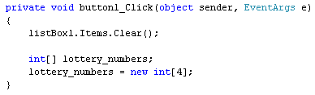
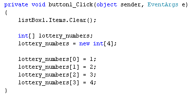
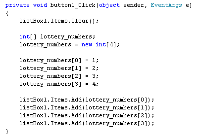
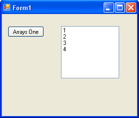
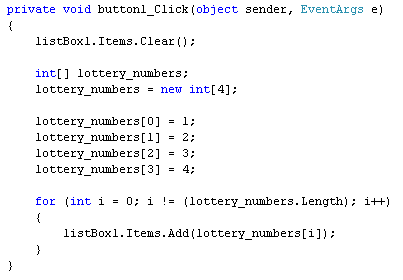
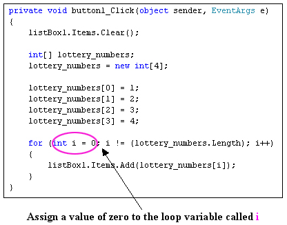
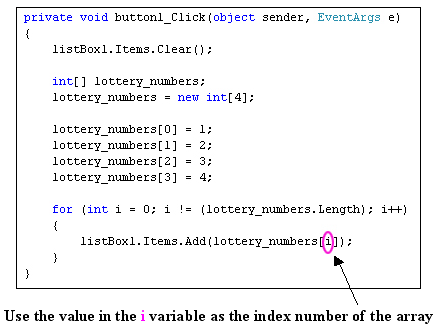
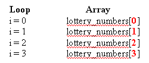
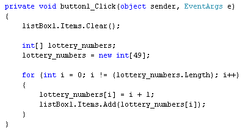
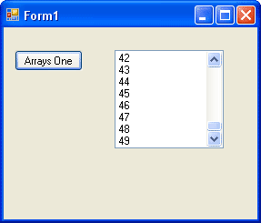

Arrays and Loops in C# .NET
<< Continues from the previous lesson
Arrays come into their own with loops. The idea is that you can loop round each position in your array and access the values. We'll try a programming example, this time.
So start your C# software up, if you haven't already, and create a new windows application. Add a button and a list box to your form. Double click your button to get at the code. For the first line, add code to clear the list box:
private void button1_Click(object sender, EventArgs e)
{
listBox1.Items.Clear();
}
For the second and third lines, set up an integer array:

Now add some values to each position in the array:

If you wanted to, you could display each number in the list box like this:
listBox1.Items.Add( lottery_numbers[0]
);
listBox1.Items.Add( lottery_numbers[1] );
listBox1.Items.Add( lottery_numbers[2] );
listBox1.Items.Add( lottery_numbers[3] );
So to get at the value in an array, you just use the array name and a position number, known as the index number:
lottery_numbers[0];
This is enough to display what value is at this position in the array. Try it out. Add the list box code to your programme:

Run your programme and click your button. Your form should look like this:

So the numbers 1 to 4, the values we placed in the array, are now displayed in the list box. Halt your programme and return to the coding window.
If you had a long list of numbers to display, you don't really want to type them all out by hand! Instead, you can use a loop. Add the following loop to your code:
for (int i = 0; i != (lottery_numbers.Length); i++)
{
listBox1.Items.Add( lottery_numbers[i] );
}
Now delete all of your listbox lines. Your code should then look like this:

When you run the programme, the numbers should display in the list box again. But how does it work?
The code works because the array index number is matching the loop variable number. Here's some images to show what's happening:


In the first image, we've highlighted the int variable we'll called i. This gets set to zero, which is the start of the loop. In the second image, we see the i variable again. This time, it is between the square brackets of the array name. The first time round the loop, the value in i is 0. The i variable gets 1 added to it each time round the loop. So the second time round, it's value will be 1, the third time 2, etc. So this is happening:

The value in each position is then accessed, which for us was the numbers 1 to 4.
One thing to make note of is this part of the for loop:
i != (lottery_numbers.Length)
Length is a property of arrays that you can use. It refers to the number of items in your array. So we're saying, "Keep looping while the value in i does not equal The Length of the array".
Use a loop to assign values to an array
You can also use a loop to assign values to your arrays. In the code below, we're using a loop to assign values to our lottery_numbers array:
for (int i = 0; i != (lottery_numbers.Length); i++)
{
lottery_numbers[i] = i + 1;
listBox1.Items.Add(lottery_numbers[i]);
}
The only thing that has changed with our for loop is the addition of this line:
lottery_numbers[i] = i + 1;
The first time round the loop, the value in i will be zero. Which gives us this:
lottery_numbers[0] = 0 + 1;
The second time round the loop, the value in i will be 1. Which gives us this:
lottery_numbers[1] = 1 + 1;
But what we are doing is manipulating the index number (the one in square brackets). By using the value of a loop variable, it gives you a powerful way to assign values to arrays. Previously, we did this to assign 4 numbers to our array:
lottery_numbers[0] = 1;
lottery_numbers[1] = 2;
lottery_numbers[2] = 3;
lottery_numbers[3] = 4;
But if we need 49 numbers, that would be a lot of typing. Contrast that to the following code:

Here, we've set up the array for 49 numbers. We've used a loop to assign the values 1 to 49 to each position in our array. So with one small change, we've saved ourselves an awful lot of typing!
Change your own code to match ours and try it out. When you click the button on your form, all 49 numbers should appear in the list box:

As an exercise, halt your programme and change the index number of the array from 49 to 1000. Run your programme and test it out. What you've done is to set up an array and fill it with a thousand values!
In the next lesson, you'll see how to set up an array when you don't know how many items are in it.